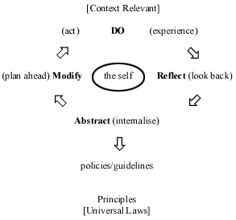

|
|
| SECTION GUIDE | |
|
·
|
Issues On-line |
|
·
|
Journal Information |
|
·
|
Subscribe to ICJ |
|
·
|
ICJ Home |
|
·
|
Home |
|
Towards Principles and Values: |
|||||||||||||||||||||||||||||||||||||||||||||||||||||||||||||||||||||||||||||
|
In my last article, I suggested that ISKCON was entering a new and dynamic 'third phase' of development in which a systematic approach towards training and education would be an important characteristic.1 Since then, several education initiatives have progressed significantly.2Nevertheless, in some cases, they have aroused concern from some members of the Society for drawing on philosophies and practices from beyond the Vaisnava tradition. This essay will explore how one such discipline, quite conventional in secular education, relates to its Vedic3 counterpart. It seems under scrutiny that the two are not inconsistent. By amalgamating both we will produce a new model which will serve as a basis for further research and development. This model can also be used as a measure to examine where ISKCON stands in terms of its evolution in education. Evidence will be presented to suggest that formal education is perhaps the most important element in ISKCON's continuing social and theological development. In conclusion, some specific proposals will be put forward for the development of the Society. In this study I will largely draw on my own experience, thus focusing primarily on adult education, though many conclusions will also be relevant to primary and secondary education (gurukula). This essay is also a response to 'Education and ISKCON' presented in the last issue of this journal by Sefton Davies. Part 1
Table 1 Comprehension of these three items are essential when establishing the aims and objectives for any learning process as the aims and objectives invariably fall within these three divisions. Furthermore, various learning methods are deemed more or less appropriate for each of these categories. Sefton Davies highlighted this in his last article,4 explaining the benefits of experiential learning for teaching skills. He also highlights the inordinate emphasis that ISKCON places on knowledge acquisition and the corresponding modes of teaching. I have been using the knowledge, skills and values model for over three years, particularly in training other devotees as teachers. During this time I have personally become convinced of the value of this method. The response from my students was also very positive. Nevertheless, for some time I was feeling uneasy, on two accounts. Firstly, I had little conclusive scriptural endorsement for my teaching practices, a point that contributed to some devotees questioning their validity.5 Secondly, as I attempted to gain a better understanding of my subject three important questions remained unanswered:
Naturally, my colleagues and I had our own ideas, largely distilled from personal experience. In response to question (1) above, we surmised that knowledge-transmission was typically predominant at the start of any scheme of learning. Nevertheless, we were not sure about the respective positions of 'skills' and 'values'. Do they develop concurrently or one before the other? Our response to the second question was less equivocal. We concluded that (within ISKCON at least) the category of 'values' achieves top priority. We identified scriptural examples to support our case-that the ultimate goal of education is to transform the nature of one's being or, in other words, to become Krishna conscious. This involves becoming humble, tolerant, compassionate and developing all the twenty-six qualities of a Vaishnava.8 A subsequent study of the first of 'The Seven Purposes of ISKCON', adopted at the Society's incorporation in 1966, appeared to endorse our conclusion that the whole thrust of ISKCON's education is to effect a change in values.9 The first of these purposes is 'To systematically propagate spiritual knowledge to society at large and to educate all people in the techniques of spiritual life in order to check the imbalance of values in life and to achieve real unity and peace in the world'. (Emphasis mine.) My observations were as follows:
Evidence from the Vedic scripture
From this verse I deduced the following:
Nevertheless, it was still not clear as to whether stage two (manana or theoretical understanding) represents a progression from stage one in terms of skills or values (or a combination of the two). In other words, does knowledge transform into understanding through the acquisition of skills, the development of appropriate values or through the parallel evolution of both? Further insight was gained from a verse in the Nasadam,13 a Sanskrit poetical work, where Shriharsha delineates the following four stages of learning:
It seems that the first three stages included in this verse from the Nasadam correspond to those listed in the verse from the Brihadaranyaka Upanisad. The fourth stage will not be discussed here, although it is obviously important and clearly distinguished from the other three. From the verse in the Nasadam it became clear that the second stage, according to our developing Vedic model, not only encompasses an intellectual grasp of the subject, but the concomitant practical application of such an understanding. It seems that skills are learnt primarily at this second stage. Nevertheless, there is not full-realisation, nor have those skills become 'second-nature'. This only occurs in the final stage (when perfection is achieved), where the knowledge, understanding and skills become internalised, or part of oneself. In other words, the student or apprentice becomes an engineer, a carpenter or a teacher (or in Krishna conscious terms, a pure devotee). He lives and breathes his subject, easily and effortlessly. This suggests the platform of spontaneity. 14 Towards an integrated philosophy of education In this model the three strands evolve in parallel throughout the whole process and become perfectly integrated during the third and final stage. Nevertheless, the explicit emphasis of teaching changes at each stage. To clarify, knowledge progresses from mere theoretical knowledge (conspicuous at the beginning of learning), through intellectual understanding, to culminate in full-realisation. Skills, latent in the beginning, form the focus of the second stage and subsequently become fully internalised. It is here, at this final stage that values take prominence, in the sense that knowledge and actions must be integrated into one's life, becoming perfectly congruent with self and desire.16 It is the stage of becoming exemplary in thought, word and deed, as expressed in the term acharana. For each strand three key characteristics are required of the student. I have identified these from the Bhagavad-gita; they are namely inquiry, submission and service. 17 The entire model, shown in table 2, may provide ISKCON with a foundation for formulating a comprehensive philosophy of education, firmly rooted in the Vaisnava tradition and explicitly endorsed by scripture.
Table 2
Further research The other two terms, knowledge and action, cannot exist independent of the self. (The converse is also true-there is no existence of the self devoid of consciousness and activity.)22 There appears to be an ongoing reciprocation between the two, which, I conclude, the experiential learning cycle demonstrates.23 There are numerous other quotes in the Bhagavad-gita and other Vedic texts that demonstrate the various relationships between our three strands.24 The analysis of education in terms of knowledge, skills and values seems largely or wholly consistent with the Vedic model. Further, I would suggest that the Vedic version positively embellish our understanding of education and its ultimate purpose. Bhakti Vidya Purna Swami has written, 'The thrust of education, therefore, must be to develop character and philosophical realisation; external knowledge and expertise are in a supportive role'. 25 Part II Here we will continue our exploration of the education procedure, including that which is considered more progressive. We will examine how it may be applicable within ISKCON and indeed, where it may be inappropriate. We will focus on aims and objectives and how they are delivered through a variety of teaching methods. Our conclusions will again be useful in helping us analyse where ISKCON currently stands and in formulating proposals for education development. Aims and objectives We will examine later how the Society's trainers are often unclear as to what constitutes their specific goals (although, quite ironically, often claiming that they are obvious and hence require no explicit delineation). We will return to this in Part Three. It is sufficient to mention here that there are two further stages in planning developed in response to the questions included below:
These three steps are essential in planning and must be formulated sequentially. The tendency is to look over them and to consider content immediately, and I suspect that this is equally true for both devotees and non-devotees alike. The reader may reflect on his or her own preparation of a class or lecture. Most of us will:
If we are more experienced, we may also initially pinpoint a theme that we intend to follow throughout. Even so, this approach remains relatively ineffective. Education experts term it as 'content-driven'. Teachers remain more concerned for what is taught rather than for why they are teaching in the first place. It is essential to have clearly focused aims without which we will undoubtedly run into difficulties, such as leaning excessively towards knowledge-transmission. This will result in the marginalisation of skills and values (though this is not to suggest that the transmission of information is unimportant). One of Sefton Davies' principal criticisms of ISKCON was that its education processes focuses on knowledge acquisition, as demonstrated by its predominant modes of teaching. Let us now examine some of these different methods and the possible rationale behind them. Teaching methods and styles Sefton Davies highlights this dynamic, contrasting education which is primarily concerned with 'putting in,' based on telling and with that which is largely 'drawing out', based on asking. He writes, 'The extreme case of putting in is that of indoctrination, where an educator wishes to implant a fixed set of ideas and to exclude the possibility of contrary ideas being considered and accepted.' Here he indirectly addresses two issues:
These are two essential points for ISKCON to consider and themes we will pick up later in the article. Sefton Davies' statement implies that an education system favouring 'putting-in' may be rooted in the desire to preserve and perpetuate a fixed set of ideas. Ideological groups, including ISKCON, fall within this category. However, can they adopt progressive styles of education? Sefton Davies has personally shared with me his conviction that it is (almost) impossible. In other words, any organisation with a fixed doctrine is obliged to be prescriptive. His ideas are probably not without foundation. We may reasonably question how ISKCON teachers can afford to draw answers from students since some responses will inevitably be at variance with Gaudiya Vaishnava theology. I will attempt to answer this question by relating an experience from my own school days. Mr Jones, my physics teacher, would regularly ask the class to conduct laboratory experiments. There was one in particular that I recall. Our task was to measure the effective weights of different objects immersed in water. We were then to plot a graph of two sets of readings and estimate a corresponding formula. On this day, I remember, I could not be bothered to finish the experiment and besides, I was a theorist anyway and believed that I already knew the correct answer. Therefore, I worked backwards, constructing the graph from the formula, and then dotting co-ordinates along its length. It was then easy to fill in the corresponding 'readings' and to gloat over my early finish. I was naturally convinced of the accuracy of my 'experiment', but significantly less than if I had actually performed it! Nor was the teacher anticipating much of a variation in the results of his students. Why, then, did he have sufficient faith in his students (providing, of course, that they correctly followed the standard experimental procedure)? The answer seems to be clear: fundamental laws of nature cannot be contravened. Consequently, the events that such principles govern are entirely predictable. According to Vaishnava theology, such universal laws apply just as much to subtle phenomena (such as the mind and intelligence) as to gross physical elements (such as earth and water), to living beings as much as to dead matter. This evidence suggests that student-based learning is appropriate when we are dealing with axiomatic or universal principles where we consider the subject to be a science rather than merely faith or belief. Conversely, such methods may not be suitable where the predominant beliefs, values and practices of a society or individual are incongruent with reality. Such ignorance can hardly flourish in an atmosphere of open and honest inquiry, but requires a healthy dose of unquestioning compliance, as is evident even in the scientific world, as well as the 'overtly' religious. We may therefore rightly suspect the integrity of any organisation or society, which restricts, explicitly or implicitly, the right of the individual to inquire openly. Another argument supporting a student-centred approach concerns the residing place of knowledge, which the Vedas consider to be locked within the heart.27 The process of teaching is to unlock that inherent wisdom. The procedure of 'drawing out' is consistent with this understanding and, if performed expertly, it will yield accurate and effective results. My personal experience of teaching confirms this. If devotees observe their spiritual practices, then the facilitator, through nurturing honesty, introspection and self-expression, can usually evoke the 'right' answers from students themselves. Naturally, there are risks involved for anyone who dares teach in a more dynamic, student-centred way. It naturally puts an onus on the teacher to truly understand and realise the subject or to admit his inadequacies.28 In either case, it calls for depth of character and a willingness to take risks! Again, this suggests that teaching methods reflect not only the managerial or organisational ethos, as previously implied, but the values held by teachers themselves.29 This may further indicate that in borrowing methods of education from outside ISKCON, devotees must be careful not to adopt values which are inconsistent with their tradition.30 An analysis of experiential learning From a Krishna conscious perspective, however, this process is to abstract not so much ideas as realisations. Therefore, to differentiate between factual and erroneous conclusions, student perceptions 31 must constantly be tested against scripture.32 This requires, in most cases, that students have some preliminary scriptural knowledge. In addition, the process of drawing out answers is dependent on the student having adequate experience of the subject. These two conclusions further imply that 'putting in' is more appropriate towards the beginning of any learning process, (at the stage of knowledge acquisition) whereas drawing-out is more suitable later on (when one tries to understand their realisations).  Figure 1 Similarly, there are other features of effective learning which predominate in the earlier and later stages respectively. These are shown below:
Table 3
These two sets of criteria closely correspond to the traditional and progressive models. I propose that each is relevant, and each essential, at its respective stage.33 The progressive model may not be appropriate without students having passed through the earlier stage. Similarly, to maintain highly didactic methods for mature students may prove equally counter-productive. The criteria listed above may again help us analyse ISKCON in its provision of education opportunities. The importance of principles
It is essential that ISKCON preserves its legacy, and in this training and education will play a vital role. A further advantage of a principle-based approach (over one which simply defines practice and procedure) is that it legitimately accommodates diversity. It maintains and communicates clear standards by which to gauge a variety of practices. It does not promote a culture of rigid compliance and conformity, but one which values individuality and initiative (though within the bounds of the mission which defines its membership). Additionally, a principle-based approach will enable the mission to synthesise its conservative and radical features and avoid fragmentation into various opposing camps. The principles which form the bedrock of continuity are found within Shrila Prabhupada's books.35 The role of scripture Therefore, we may conclude that an effective education system promotes understanding and realisation achieved by internalisation of knowledge derived from appropriate authority. The basis of commitment Assessment should precede each stage of commitment, so that the candidate can take full responsibility for his or her decision. Contrary procedure may lead to premature commitment, which not only causes later retractions, but may also result in bitterness towards the organisation that failed to meet unrealistic expectations. A society such as ISKCON has a responsibility to explain clearly to candidates their future prospects and any corresponding rights and responsibilities. Any enrolment policy simultaneously requires the clear understanding of the specific purposes of that particular programme. Unfortunately, as we will see later, there are very few ISKCON initiatives with such clearly focused aims. In fact, until recently there has hardly been any formal education at all. In other words, the Society and its leaders have not yet recognised the benefits. Which leads to the obvious question-why not? Leadership and values Values are determined not so much by what is spoken from the vyasasana (elevated seat for a teacher in class). Rather, they are largely moulded by social interactions, particularly through forms of reward and punishment (however subtle). Therefore, the prevalent leadership ethos will significantly determine the nature of a Society's education system. It is also the duty of leaders to ensure, through appropriate evaluation, that their organisation is on course for meeting its aims. From my experience, I see striking parallels between the managerial and education processes. Secular management often recognises the importance of on-going training for its entire staff. Nevertheless, in these professional organisations, training is usually a matter of expediency in meeting financial goals. It is clear that ISKCON's very aims are education-based, as revealed through the first of its Seven Purposes. For this reason, the managerial function must serve the education processes, rather than vice versa. The following analysis of ISKCON and subsequent proposals are intended especially for consideration by the leaders of the Society. Part III This naturally involves identifying the Society's shortcomings: not in a mood of criticism but as an attempt to move realistically and constructively forward. Despite the challenges-and they are numerous-there are indications as I mentioned in my earlier article, that the movement is positively evolving as it enters 'Phase Three' of its development. Identifying areas in need of improvement Knowledge (1) There is an over-emphasis on knowledge-acquisition It would be interesting, if not revealing, to ask academics, media and faith leaders who have an interest in ISKCON what they expect of our members. I suspect that they would give greater emphasis to character and behaviour. We could also reflect on what our own tradition says about the respective priorities afforded to knowledge, skills and values. (2) Education methods are almost entirely teacher-centred.
Amongst some progressive non-devotee educators, lecturing is considered suitable for little more than knowledge-transmission. Conversely, within Vaishnavism, a morning class is a place of honour and cannot be equated with mere information-transfer. On this point, there seems to be a clear rift between non-devotee specialists and the tradition itself. I have noted that the morning Bhagavatam class does not take place in isolation. It is one part of an entire process, which has other highly experiential components. Lectures are delivered most effectively at the end of the 'morning programme.' The attendant spiritual practices, particularly the chanting of the names of Krishna on japa beads, enhance the consciousness, making the practitioner far more aware and receptive to hearing. During the lecture, an effective teacher will draw from life experience, speaking with direct realisation, which will powerfully transform the heart of the sincere listener. The devotee then carries forward what is learned into the day's service, meditating on the teacher's words. My own perception of this process is that even the lecture itself can be highly experiential, with the potency to transform values. For formal temple situations, I am reluctant to suggest that devotees use radically different methods. Nevertheless, there is scriptural evidence for using such technique (as we have already examined). We have heard how realisation is one of the ultimate goals of education. Let us now examine how Shrila Prabhupada defines the word: Personal realisation does not mean that one should, out of vanity, attempt to show one's own learning by trying to surpass the previous acharyas. He must have full confidence in the previous acharyas, and at the same time he must realise the subject matter so nicely that he can present the matter for the particular circumstances in a suitable manner. The original purpose of the text must be maintained. No obscure meaning should be screwed out of it, yet it should be presented in an interesting manner for the understanding of the audience. This is called realisation. This endorses the principle of adjusting one's presentation to suit the audience, and may indeed support the whole concept of progressive education technique. I suggest that devotees should seriously consider using progressive education techniques outside the context of a temple lecture. (3) The Society has little promotional material beyond
canonical literature. Although theology is of the utmost importance for ISKCON, many devotees now consider this insufficient on its own. They acutely feel the need to practically live and demonstrate their teachings, and to 'walk their talk'. For a society of our size and prominence, the lack of suitable literature reveals, again, an inordinate emphasis on knowledge alone and perhaps a reluctance to share ourselves with those outside the movement. Skills (4) Little importance is attached to skills training.
Another key issue is the lack of vocational training for the vast majority of residential devotees who eventually marry. The question often arises as to whether or not this is indeed the responsibility of the Society. (5) There is little or no service assessment and
insufficient accountability. A corollary of these phenomena has been the reluctance of temple devotees to engage the skills of congregational experts whose spiritual practices failed to meet temple standards. In conclusion, material propensities and spiritual qualifications have been totally muddled. What is ironic here is the apparent emphasis on values, which does not bear up to scrutiny, as we will now see. Values (6) There is a lack of congruence between the theoretical
knowledge and values that devotees demonstrate. I have listed below some of the values that the Society seems to have nurtured in its members, perhaps unconsciously, and which are inconsistent with scripture: (a) Short-term results have been rewarded more highly than
long-term commitment. (7) Scripture has been misused to endorse erroneous practices
and their attendant values. (8) Business (vaishya) values have been predominant.
(9) Discerning people have been reluctant to become closely
involved. Formal education (10) There is little formulation of people-centred goals. (11) There is very little continuity and progression. (12) There are few clearly delineated systems and structures
for training. (13) No clear enrolment policies. (14) New devotees are considered manpower rather than students.
Proposals (1) Clearly establish the vision, identity and function of all ISKCON temples, with specific emphasis on their primary role as education institutes. (2) (a) Identify the different groups who have education needs. I have isolated four major categories namely: (i) leaders and managers (b) Establish specific purposes of training and education for
each of these groups. (3) Corresponding enrolment policies should be established for all training courses and thereafter, scheduled periods of commitment and assessment. (4) We publish appropriate advertising material which clearly differentiate between: (a) our theology (b) our understanding and experience of Krishna consciousness (c) the opportunities which ISKCON offers to individuals for interaction with the Society. (5) Members who enter the Society for residential training do so with clear understanding of their future prospects. They should enter on a contractual basis with defined rights and responsibilities. (6) All teachers and trainers will be trained and accredited, according to international standards. (7) All managers should be trained, particularly to appreciate: (a) the basic principles of leadership and management with regard
to dividing society and training accordingly (8) Strong links should be forged between managers and educators to implement all the above and to ensure that the management procedures serve the education purposes of the Society, and that the predominant values within the Society are brahminical. This means that leadership and management should be pro-active rather than reactive, responding to situations promptly and anticipating what may be required in the future. Conclusions
|
Print this page |